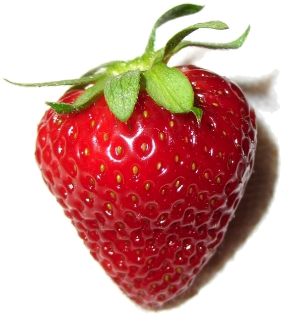

Asal Usul Tanaman Stroberi
Tanaman stroberi (Fragaria × ananassa) berasal dari hasil persilangan dua jenis stroberi liar dari Amerika dan Eropa pada abad ke-18. Stroberi pertama kali ditemukan tumbuh liar di pegunungan dan daerah beriklim sedang. Buah ini kemudian mulai dibudidayakan di Prancis sekitar tahun 1750-an.
Perkembangan Stroberi di Dunia
Seiring perkembangan perdagangan dunia, stroberi mulai menyebar ke berbagai negara, termasuk Asia. Di Indonesia, tanaman ini dibawa oleh bangsa Belanda pada masa kolonial dan pertama kali dibudidayakan di daerah beriklim sejuk seperti Bandung, Lembang, dan Brastagi.
Manfaat Stroberi
- Kaya vitamin C yang baik untuk daya tahan tubuh.
- Mengandung antioksidan untuk melawan radikal bebas.
- Baik untuk kesehatan kulit dan jantung.
- Dapat diolah menjadi jus, selai, kue, dan makanan penutup lainnya.